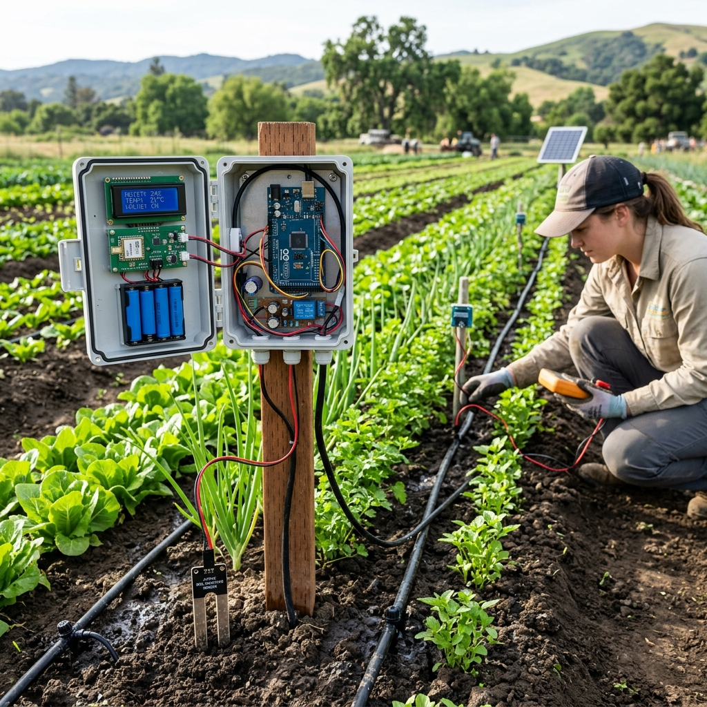
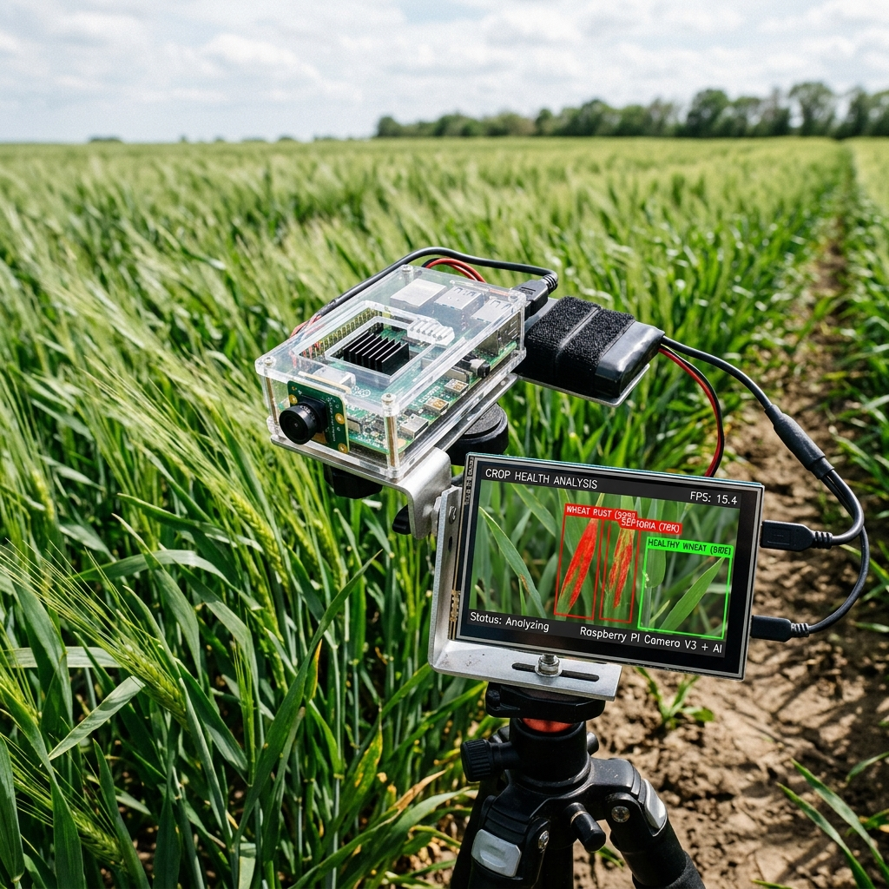
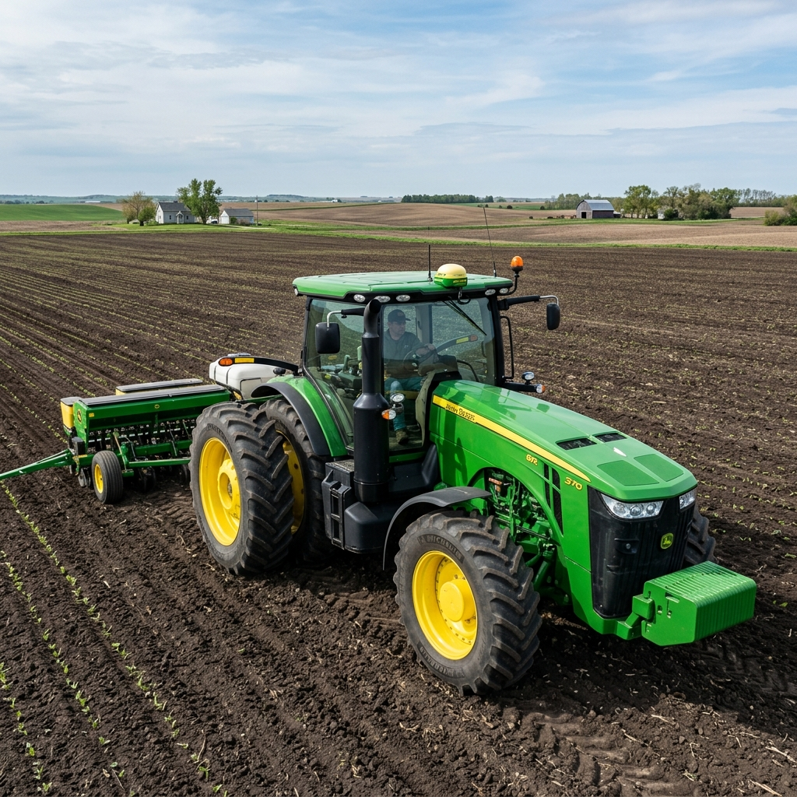
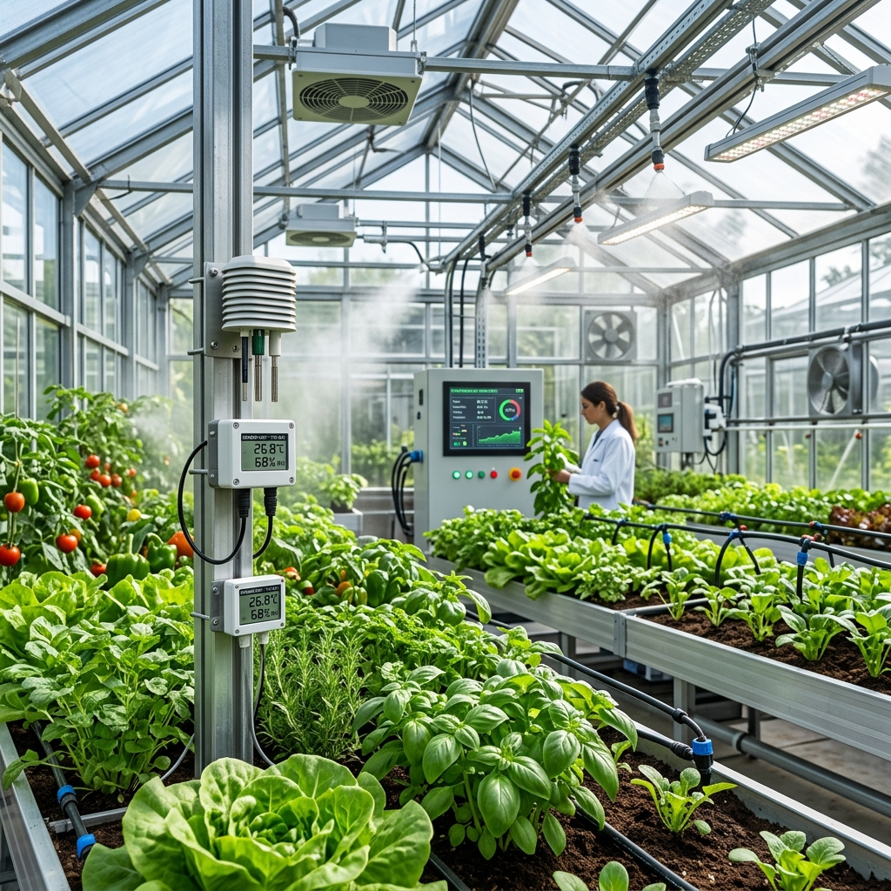

AgriMind
Mind Your Fields
Tarlana Akıl Ver
Elektronik, Robotik ve Yapay Zeka ile Tarımda Akıllı Çözümler
Gerçek sorunlar, gerçek çözümler - teknoloji ile tarımı insan ve doğa odaklı hale getiriyoruz.
AgriMind'ın kuruluş hikayesi, tarlalarda ve seralarda gördüğümüz zorluklardan ve verim kayıplarından başladı. Yıllarca tarım ve teknoloji sektörlerini incelerken, geleneksel yöntemlerin artan maliyetler ve iklim değişiklikleri karşısında ne kadar yorulduğunu gördük. Bu deneyimle, yapay zekayı ve robotiği sadece teknik araçlar olarak değil, üreticimizin en değerli ortağı olarak görmeye başladık.
Bugün, ekibimizle birlikte her arazinin ve seranın benzersiz ihtiyaçlarını anlamak ve ona özel akıllı çözümler üretmek için çalışıyoruz. Karmaşık teknolojileri bilmeniz veya kod yazmanız gerekmiyor; sadece sahadaki sorunlarınızı bize anlatın, biz geri kalanını hallederiz.
Her müşteri ilişkisini uzun süreli bir ortaklık olarak görüyoruz. İlk analizimiz her zaman ücretsiz çünkü sahada gerçek bir değer ve verim artışı oluşturmadan önce sizin güveninizi kazanmayı tercih ediyoruz.

Her teknoloji bileşeni, akıllı tarım çözümlerimizde özel bir rol oynar
Sensörlerden ham veriyi okur, motorları çalıştırır. Hızlı, basit ve ekonomik
Görüntü işleme yapar, AI modellerini çalıştırır. Güçlü ve akıllı
Görüntü işleme ile kameradan gelen verileri analiz eder, zaman serisi analizi ile geleceği tahmin eder
Gerçek problemler, AI destekli akıllı çözümler

Toprak nem sensörleri ile otomatik sulama kontrolü. Su tasarrufu sağlar ve bitki sağlığını optimize eder.

Kamera ve AI ile bitki hastalıklarını erken tespit eder. Zamanında müdahale imkanı sağlar.

GPS ile tarım makinalarının konumunu izler. Verimli rota planlaması ve yakıt tasarrufu sağlar.

Sıcaklık, nem ve ışık sensörleri ile sera ortamını otomatik kontrol eder. Optimal büyüme koşulları sağlar.

GPS ve AI destekli otonom robot. Ot temizleme, ilaçlama ve hasat işlemlerini otomatik gerçekleştirir.

AI ile yerel hava durumu tahmini. Tarımsal faaliyetler için en uygun zamanları belirler.

Yüksek çözünürlüklü drone kameraları ile tarım arazinizin topografik ve bitki örtüsü analizini gerçekleştirir. Hassas tarım için kritik veriler sağlar.

Sınıflandırma aşamasında olan, traktör, ahır, sera ve hasat sonrası için geliştirdiğimiz akıllı donanım ve yazılım konseptleri.
Bu projelerin hepsi "Edge AI" (Yapay zekanın bulutta değil, cihazın kendi çipinde çalışması) mantığına dayanır.
Tarlalar ve köyler her zaman stabil internete sahip değildir. Raspberry Pi veya NVIDIA Jetson gibi kartlara hafifletilmiş modeller (TensorFlow Lite, Edge Impulse) kurarak internet kesilse bile sistemin çalışmaya devam etmesi sağlanır.
Tarımın her alanında teknoloji destekli çözümler sunuyoruz